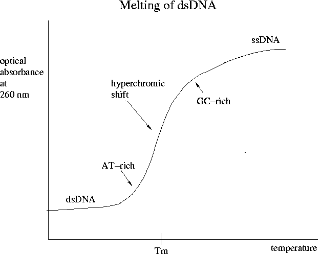

Day 4 Afternoon Lecture Notes
Steve Williams, Smith College
June 9, 2004
How does the PCR reaction in a given elongation step stop?
The processivity of an enzyme is the nucleotide length it will travel without unbinding. PCR is more efficient with shorter templates. As a result of random unbinding, the length of sequences after PCR is somewhat variable. Shorter PCR products can only template shorter products of subsequent generations. Therefore long pieces increase arithmetically while smaller copies will amplify geometrically. The vast majority of molecules will have their length determined by the forward-primer-to-reverse-primer span.
With perfect efficiency and n cycles of the reaction, there are 2n product molecules. In real reactions,
P = T * (1 + E)n
where P is the number of product molecules, T is the amount of template at the start and 0 <= E <= 1 is the efficiency.
Taq Gold is a proprietary version of Taq polymerase that, until heating to 95°C for 10-12 minutes, is bound to another molecule. Taq Gold permits RT-PCR to be performed in one tube since Taq isn't active during the RT step and the heating that activates Taq denatures the reverse transcriptase. Taq Gold has also enabled "hot start" PCR which discourages mis-priming at lower temperatures. If DNA polymerase is active near room temperature, then misprimed sequences can be amplified. With Taq Gold, mis-primers unbind during its activation. For this reason, hot start is considerably more efficient. Before Taq Gold, hot start required the addition of DNA polymerase during a brief cooling step after a 95°C denaturing step.
Ligation and hybridization are the most common steps to fail in a protocol. Hybridization temperature is variable and depends critically on the exact sequence of the probe. Hybridized DNA or RNA molecules are characterized by their melting temperature Tm.

DNA has a maximum in optical absorbance at 260 nm. ssDNA has a greater absorbance due to lower degree of order. Highly repetitive sequences like ALU have more AT pairs than exons and will melt first. Mammalian genomes are on the average 60% AT. Probe and primer hybridization conditions must be selected based on a calculation of Tm.
The higher the temperature, the great the stringency: the more the probe and template must match exactly. When a probe from another species or in the same gene family is used, less stringency is required than when part of the sequence of the gene in question is known.
Usually Na ions are used in hybridization reactions although K ions or pH modification could equally well be employed. Every nucleotide on each strand carries one negative charge due to the phosphate group. Electrostatic repulsion of the two strands can cause AT-rich DNA to denature in pure water at room temperature. Na ions greatly stabilize DNA. The higher the Na concentration, the lower the stringency.
Examples: 6X SSC buffer = 1 m (molar) Na+
5X SSC buffer = 0.83 m Na+
Formamide is a denaturing agent that competes with nucleotides for H bonds. The higher the formamide, the greater the stringency. Why use formamide rather than increase the temperature? Mostly due to the desire to avoid unreasonably high temperatures where tissues may degrade.
Longer probes bind more tightly because they have more H bonds.
For lengths >= 200 bp, the empirically determined melting temperature is
Tm = 81.5°C + 16.6*(log m) + 0.41*(%GC) - (500/length) - 0.63*(%formamide)
Thus Tm is 81.5°C for a long probe that's all AT binding to a perfectly matched target where [Na+] = 1 m and there's no formamide. 6x SSC buffer has [Na+] = 1 m. Note that in the equation above for %GC = 50%, plug in "50," not 0.5.
For 6x SSC buffer, a long probe in the absence of formamide has
Tm = 81.5°C + 0.41*(%GC)
Thermophilic organisms can have %GC = 80% which is why their DNA doesn't denature at temperatures greater than 100°C. For our plaque lifts in Experiment 1, we're using 5x SSC and LINE1 is 78% AT, so for 1400 bp probes, Tm = 89°C. For a reasonable degree of stringency in hybridization, use (Tm - 25°C) <= Thyb <= (Tm - 15°C). The lower temperature gives a less stringent condition and is appropriate for our for our attempt to match our probe to all members of the RevT family, not just the same exact gene.
To match a C. elegans gene to mouse, an even lower temperature like (Tm - 35°C) can be tried, although false positives will undoubtedly occur. Note that primers (oligos) are too short for the equation above to apply. The equation for primers is much more complex.
5x Denhardt's solution is a common blocking agent. The composition of the 100X stock is
BLOTTO (bovine lacto transfer technique optimizer) is another popular pre-hybridization solution that's basically Carnation non-fat dry milk. Milk cannot be used as a blocking agent for RNA since it contains ribonucleases.
A Few Notes from Day 4 Evening Bioinformatics Lecture
by Barton Slatko, New England Biolabs
June 9, 2004
(Other notes taken directly onto handouts)
The National Center for Biotechnology Information website is an invaluable source of information.
Most of the companies that sell reagents like oligos and restriction enzymes have software on their website to aid in selection. The software calculates useful quantities like Tm, finds restriction sites in sequences, checks for hairpins in primers, etc.
Up Previous Next